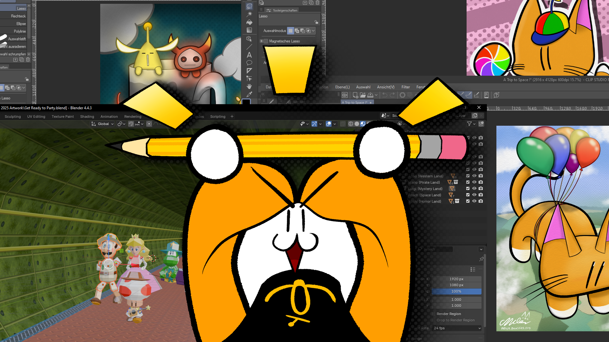

Portfolio
Portfolio
My Artworks !
I really love making art ! Especially art about cats, for some reason !
You can view my artworks here on the art page, as well as on newgrounds !

Art
VPKEdit German Translation
Source Engine Modding !
Now in 𝔃𝓮 ğ“ğ“®ğ“¾ğ“½ğ“¼ğ“¬ğ“±ğ“® 𝓢𝓹𝓻𝓪𝓬𝓱𝓮 !
I worked on the german translation of VPKEdit, a modding tool for Valve's Source Engine created by craftablescience.
VPKEdit is a program, which can be used to read, edit and create Valve Pack Files (VPK) to store assets for use with basically every single Source Engine game like Half-Life 2, Counter-Strike: Source, Garry's Mod etc.
It also provides an easy way of previewing proprietary Source Engine files, like VTF texture files, VMT shaders and also model files !
So if you are into Source modding, go check out VPKEdit on Github ! I've been using this tool myself every now and then when working on some GMod dohickies and it really proved itself as a pretty useful tool, especially when working with custom assets !
Doshin the Giant Expansion Pack Translation
A fan translation for Doshin the Giant 2 !
I am currently working on an English translation for the N64 Disk Drive game "Kyojin no Doshin Kaihō Sensen Chibikko Chikko Daishūgō" also referred to as Doshin the Giant Expansion Pack or Doshin the Giant 2.
It's an expansion to the game Doshin the Giant (also known as "Kyojin no Doshin") where you play as a Giant named Doshin who helps villagers on an island called Barudo to build houses, farms and monuments. It's quite a calming experience and i have spent way more time with this game than any other sane person should probably ever do. Especially with the GameCube Version of Doshin the Giant ! Kazutoshi Iida really made some pretty cool games...
In the sequel however, you play as a toddler, trying to help Doshin escape from a prison at EXPO 96 by building pavilions based on the monuments built by the villagers in the original game and by teaming up with other toddlers which start to appear at the EXPO the more pavilions you build.
The way pavilions are built is fairly straight forward. The player is asked to insert the Doshin the Giant 1 Disk into the 64DD. After which the game checks the save file present on the Doshin 1 disk for the monument, which coresponds to the pavilion the player is trying to build. If the monument is found in the player's monument gallery, the pavilion will be built.
Building these pavilions causes a Queen companion to apear. They will task the player to do a certain task in Doshin 1. Some of these Tasks include staying underwater for a certain amount of time or collecting a certain amount of hearts from the villagers. Completing those tasks rewards the player with a movie clip of a black and white animated show called "More than Giant". This show goes into the history of Doshin, Barudo Island and it's inhabitants. At least... i think it does?
The ultimate goal of the game is to... *ahem* "piss" hearts onto Doshin to make him grow in size until he can break free from his cage... yeaaaa.
This game is weird as fuck! And even though this game is super weird and definitely not the best game the 64DD had to offer, it's still a guilty pleasure of mine and i want players, who are interested in this game, to be able to play this game in english, since this game is quite text-heavy.
To be honest i haven't been working on this project all too much in the past months as i was busy with a few other things, so the translation still mostly resembles the one seen in my showcase video. HOWEVER! If i have the time and i am in the right mood to spend hours upon hours staring at an hex editor, i will continue to work on this translation! ...i'm really not the right man for this job, am i?
Current progress
as of 23.08.2025:
Textures: Mostly complete ! Some textures still need some touch ups, however !
For example, the quotes seen when starting the game are suposed to have a transparent background instead of a black one. Also some construction signs at EXPO 96 have some weird offset problem on either the left or the right side of the texture.
EXPO 96 Brodcasts and "More Than Giant" Movies: Not that much progress here yet. All i know so far is that the files for the brodcasts seen at EXPO 96 are stored in the HVQM2 1.0 format.
HVQ and HVQM are both media formats developed by Hudson Soft for the N64. HVQ files were used for image compression, while HVQM files could be used to compress .AVI files to be played back on the N64. The file header for both formats can be found in the official N64 SDK.
Both HVQ and HVQM are compressed using Vector quantization, which is also used by video codecs such as Bink Video developed by Epic Games. The game's rom features a total of 165 instances of the HVQM2 header, which is... a lot. Especially with the 64DD's 64MB limit taken into consideration.
Although i'm not yet quite sure how many of those files are actually used, unused or even empty dummy files.
Rough list of all video files in ROM:
17 x "More than Giant" Movies
17 x Pavilion not built notifications
17 x Queen companion notifications / unfinished mission notifications
48 x Brodcast reminders (Playing every 30 minutes)
1 x Brodcast begin
1 x Ending cutscene
1 x Credits
63(?) x Regular SM Diamond brodcasts
? x Unused or dummy files (if any)
Total amount of video files in ROM: 165
Character dialoges: Not much progress here either, which is a real bummer, because this is the part of the game, which is in need of a translation the most ! My brain just can't really comprehend... things... and hex editors.
gm_nova_mall
A Garry's Mod map set in a shopping mall after closing hours
This project is still being worked on and is nowhere near complete !
All footage seen here is subject to change !


I've been working on this GMod map very on and off from time to time. The map is set at a shopping mall right after closing time. The player will be able to explore the mall to their hearts content, as well as the parking garage.
Now, as you can see this map is still VERY unfinished and i seriously doubt, that this map will release anytime soon.
I'm working with a bunch of custom assets, like textures, models, sounds and all of that stuff. And as i am the only person working on this project it gets quiiiite overwhelming, if im being honest.
Everyone who has done stuff with the Source Engine in the past probably knows how hard it can be to get things like custom assets working propperly. Source modding can be a real pain in the ass sometimes !